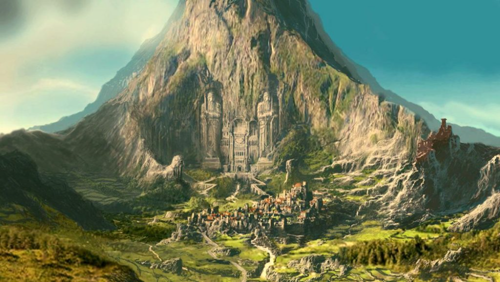
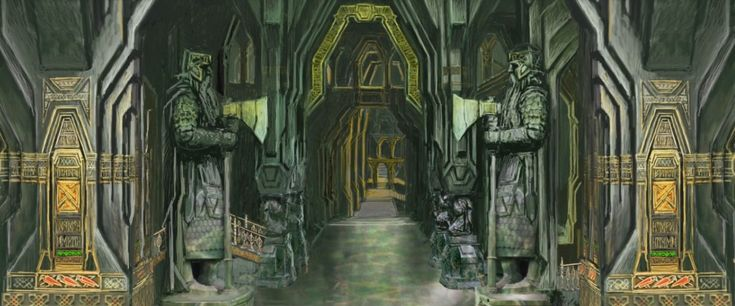
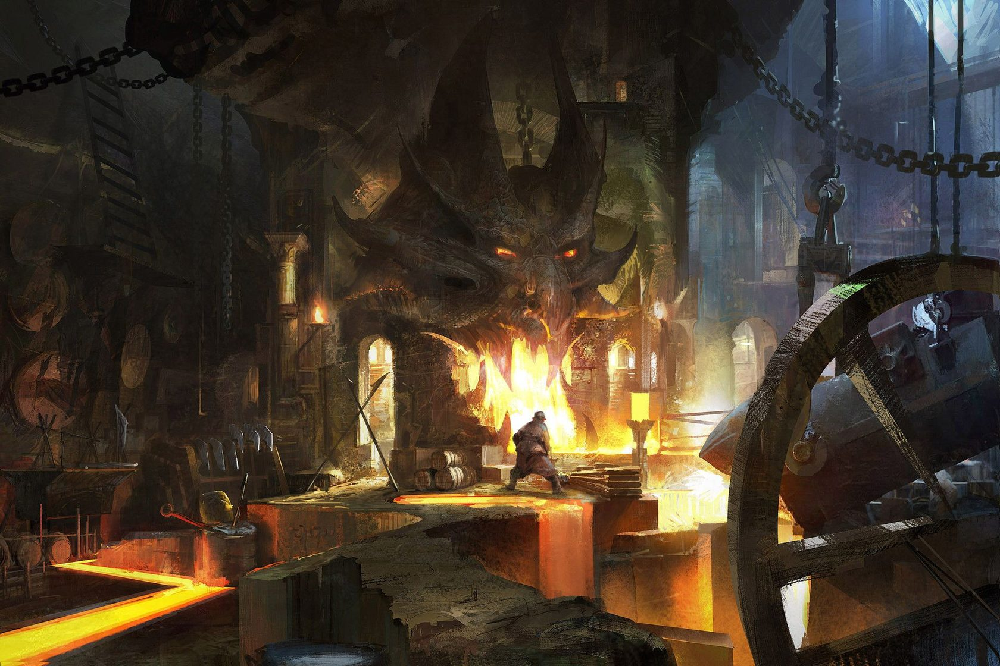
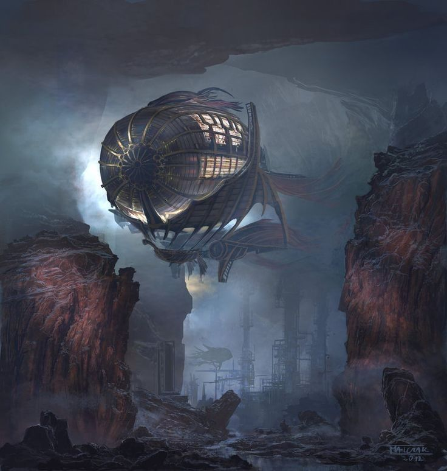

⛏️ Крепость Гордон
Цитадель мастеров


Население: Дварфы
Правитель: Король Ульрих
Расположение: Остров на континенте Лэстрэл
Описание
Крепость Гордон — это поистине красивое и прогрессивное место, вырубленное в скалах. Оно населено умелыми мастерами, чьи навыки охватывают всё: начиная с величественной архитектуры и заканчивая сложнейшими магическими рунными печатями. Дварфы Гордона — настоящие виртуозы в создании изощренных механизмов, которые приводят в движение лифты, двери и даже целые оборонительные системы.

Гордость клана
Но главное, чем дварфы очень гордятся — это изготовление фирменного алкоголя. Их рецепты передаются из поколения в поколение, а бочонки с янтарным напитком рассылаются по всему континенту, от заснеженных гор до жарких пустынь.
История и Правитель
Территориально, согласно историческим хроникам, во время Великой войны территорий дварфы обосновались на большом острове континента Лэстрэл, который был назван — «Гордон». С тех пор это место стало их неприступным домом.
Правит этими землями действующий король дварфов — Ульрих. Под его мудрым руководством Гордон процветает, а его подданные продолжают совершенствовать свое мастерство.

Как добраться
Добраться до Гордона в редких случаях возможно на кораблях, но морской путь опасен и долог. В основном дварфы придумали совершенно новый вид воздушного транспорта, который они назвали дирижаблями. Эти огромные, наполненные газом машины с медными винтами стали символом прогресса дварфийской инженерии и единственным надежным способом добраться до острова.
Достопримечательности
- Пивоварни Гордона: сердце крепости, где варят знаменитый на весь мир эль.
- Механический квартал: район, где создаются дирижабли и рунные механизмы.
- Главный зал короля Ульриха: тронный зал, украшенный барельефами из меди и золота.